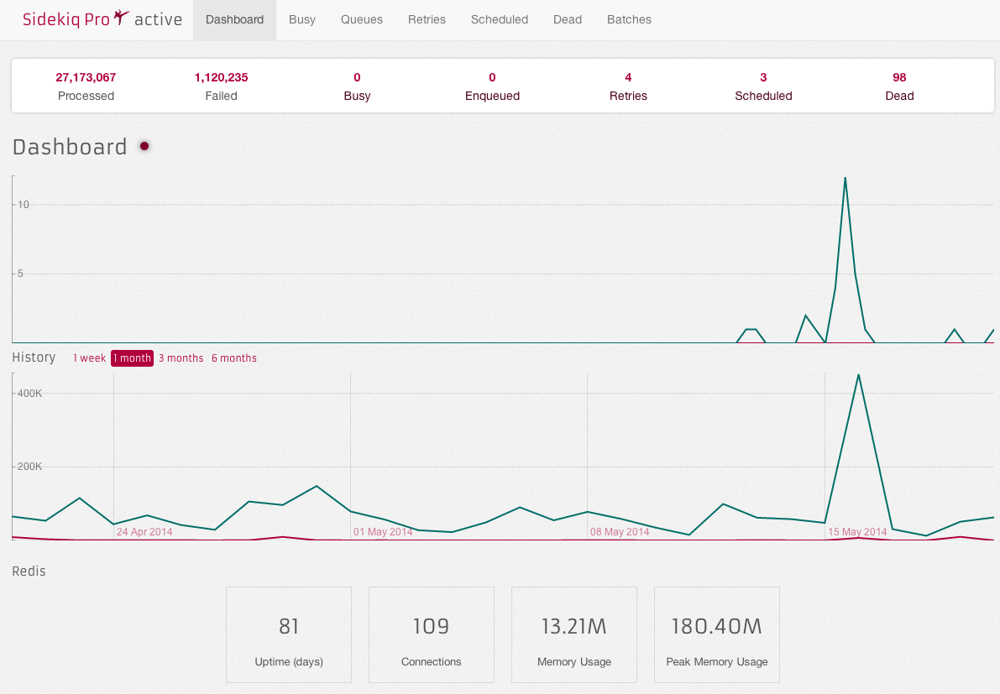

Sidekiq：异步队列
一、异步与任务
对于耗时较长的事务必然要使用异步，否则会严重影响用户体验；还有那些不能马上被消费掉的任务，如果不使用队列进行管理的话，很容易造成堵塞，然后导致网络瘫痪。 比如发送邮件这一类事务，非常合适使用异步队列管理。
队列还可以用来做消息队列，不过那一类虽然也是异步，但对实时性相对较高。Message Queue比较有名的比如RabbitMQ，ActiveMQ等。 功能都比较丰富。下回再讲MQ。
二、Sidekiq介绍
Sidekiq比较成熟，速度较快，对于Ruby来说是一个很好的选择。之前的Resque和DelayedJob都不如Sidekiq有效率。
Sidekiq还提供了web ui用来监控。
二、Sidekiq快速入门
首先，在 Gemfile 中添加对应包 gem 'sidekiq'。 接着，在 app/workers 文件夹中添加一个 worker，来处理异步请求：
class HardWorker
include Sidekiq::Worker
def perform(name, count)
# do something
end
end
# 调用
HardWorker.perform_async('bob', 5)
# 延时调用
HardWorker.perform_in(5.minutes, 'bob', 5)
#使用自带delay调用
User.delay.do_some_stuff(current_user.id, 20)
启动Sidekiq：
bundle exec sidekiq
三、Redis
Sidekiq把队列存到Redis。所以还要开一个Redis配合。Redis比较简单，配置好启动服务就可以了。
Authors and Contributors
Qiqidone (@qiqidone) can be founded GitHub.